第二章：内核总述
目录
这部分我比较感兴趣，所以跳过第一章来读。
windows内核(NTOS Kernel Executive)由以下部分组成，可见有着许多子系统：
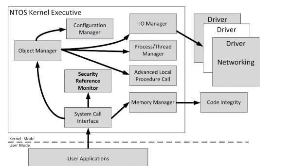
在API调用中，API的前缀也对应着内核中不同子系统，这一点可以很好的识别API的作用作用范围
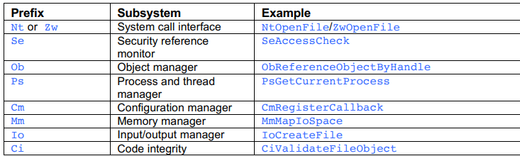
子系统
Security Reference Monitor(SRM)
对于安全人员来说应该是最重要的子系统，它掌控着用户权限等与安全相关的东西。
access token
SRM 通过向系统上运行的每个进程分配访问令牌来（access token）定义用户的身份。 通过access token，SRM可以实施访问检查（access check）： 举个例子，当一个用户进程想要访问一个资源（Resource，比如说想要访问一个文件）时，SRM会获取资源的安全描述符（security descriptor），然后与用户进程的access token进行比对，计算access token的访问等级，或者直接返回禁止访问，从而达到资源的访问级别控制的目的。
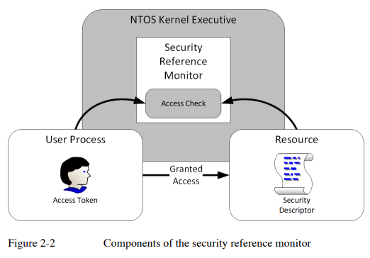
同时SRM也有审计功能，管理员可以看到哪个用户访问了哪个资源，通过这一点可以有效地进行恶意软件的排查和安全配置错误的诊断。
SID
用户和用户组的二进制结构，security identifiers (SIDs）。 用户和用户名在SRM能够使用前，会通过 Local Security Authority Subsystem（本地安全权威子系统，LSASS）来转换为SID，以供SRM使用。
微软定义了Security Descriptor Definition Language(SDDL) 来将SID以字符串的方式展示：我们可以简单的通过powershell的get-ntsid函数获取一个用户或用户组的SID字符串。 一个SID字符串大概长这样： S-1-5-21-330569006-3445065962-2600463357-500。 第一项S表示该字符串是SID；第二项是SID的版本号，固定为1；然后是标志符的颁发机构（identifier authority），颁发机构就是NT，值是5。然后表示一系列的子颁发机构，前面几项是标志域的，最后一个标志着域内的帐户和组。
Object Manager
https://learn.microsoft.com/en-us/windows-hardware/drivers/kernel/windows-kernel-mode-object-manager
在linux里，所有东西都是文件；而在windows里，所有东西都是对象（文件、设备、同步机制、注册表项等等等等），在内核里都是以对象结构存在。 Object Manager就是windows里管所有资源的子系统。
** Object Type 对象类型**
windows内核维护着一份记录所支持对象的类型的清单。
这里稍微列几个
Files
Devices
Threads
Processes
Events
Mutexes
Semaphores
Registry keys
Jobs
Sections
Access tokens
Symbolic links
Object Manager NameSpace（OMNS）
windows 内核中有一套额外的文件系统，即 Object Manager Namespace。官方对它披露不多。 OMNS基于Directory 对象建立，它看上去和普通用户所能接触到的文件系统（就像explore打开的一样）差不多，就像下图一样
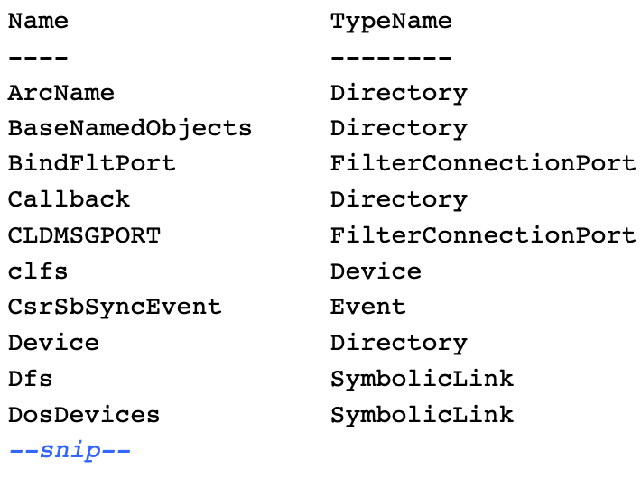
在OMNS中有几个广为人知的目录，如下图
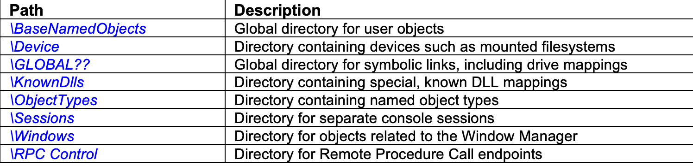
其中BaseNamedObjects目录（BNO）可以允许任何用户创造有名字的内核对象（注意的是在BNO目录创建对象并不是必须的，它只是一个习俗），它允许一个系统上的两个用户共享资源。
系统调用
System Call系统调用
用户态应用可以通过SystemCall去访问OMNS里的对象：在用户层调用SystemCall接口调用内核层代码去访问指定对象。
SystemCall的API会以Nt或者Zw开头。对于用户态来说，这两种前缀都是等价的，但对于内核态来说，Zw前缀的API会改变安全检查进程（第七章细说）。
NtCreateMutant结构
下面将以NtCreateMutant讲解一个系统调用API的结构
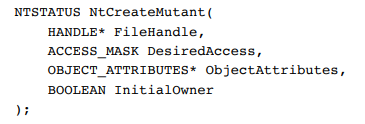
系统调用的第一个参数是一个句柄（HANDLE），在函数成功执行时作为一个已打开的对象的句柄，通过其它系统调用来使用该句柄去访问属性并进行操作。
第二个参数DesiredAccess，表示调用者赋予句柄的权限，在后续会更详细讨论这个参数，因为它与SRM相关
第三个则为ObjectAttributes，定义了要打开或创建的对象的属性，它是一个结构体，结构如下

ObjectAttributes第一个参数Length表示这个结构体的总长度，用于确保整个结构体都被传递进系统调用过程里。 ObjectAttributes第二个参数和第三个参数RootDirectory，它们同时使用以指示系统调用如何查找正在访问的OMNS资源，RootDirectory是一个句柄，指示出一个打开的OMNS目录对象句柄。ObjectName字段是一个指向UNICODE_STRING结构的指针（如下），用于从缓冲区接收字符串对象。 如果想要指向\BaseNamedObjects\ABC，可以通过仅设置ObjectName为\BaseNamedObjects\ABC或者将RootDirectory设置为\BaseNamedObjects，ObjectName设置为ABC。
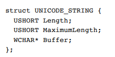
ObjectAttributes第四个参数用于指定对象名称的寻址过程以及返回的句柄的权限，如下表
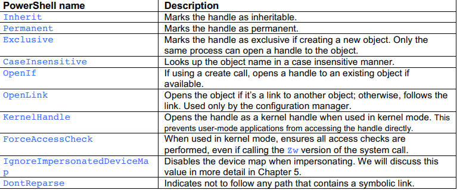
ObjectAttributes最后两个参数用于指定安全描述符（第五章详细讨论）和 Security Quality of Service (SQoS，第四章详细讨论)
返回到NtCreateMutant的第四个参数InitialOwner，在这里用于指定创造的对象（这个函数创造的对象是Mutant，一个和线程同步有关的对象）是否归属于执行系统调用的用户。这里可以设置有很多复杂的参数，在后文讨论。
NTSTATUS Codes
所有系统调用都会返回一个32bit的NTSTATUS code，结构如下
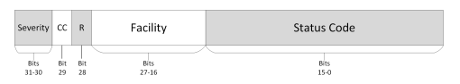
在NTSTATUS code 30和31位bit的值用于表示这个系统调用的执行状态（是否成功或者执行错误等）
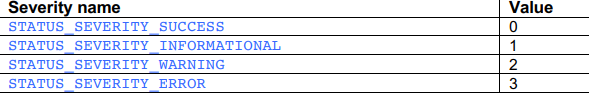
如果严重性是警告或错误，那么状态码的第31位将被设置为1。如果将状态码视为有符号的32位整数，那么这个位表示一个负值。通常的编码惯例是假设，如果状态码是负数，那么该代码表示一个错误，如果是正数，那么表示成功。从表中可以看出，这个假设并不完全正确，因为负的状态码也可以是一个警告，但在实践中它足够有效。
29比特位的CC用于表示状态码是否由Microsoft定义（值为0）还是由第三方定义（值为1）。但其实第三方没必要遵守这个规范。
28位的R是一个固定值0.
27-16比特位的Facility用于指示与状态码相关联的组件或者子系统，微软预定义了大约50个Facility。第三方应该定义自己的Facility并结合代码与微软预定义的Facility区分开来。如下有几个常见Facility

15-0比特位则是由实施者自己定义的状态码，如下表展示一样。
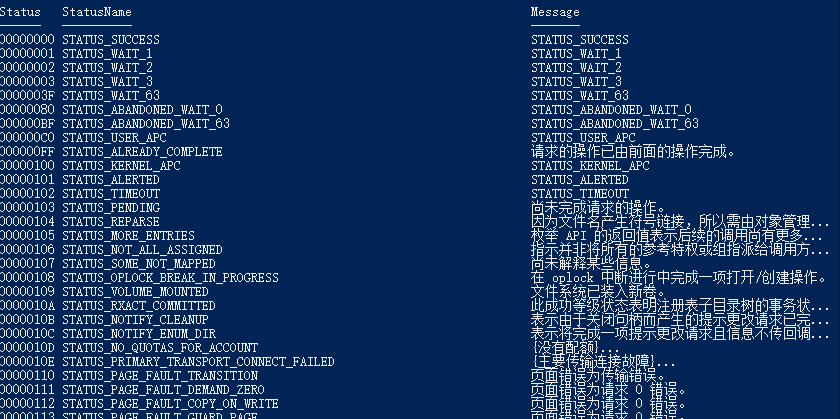
对象句柄
用户层不能直接读写内核层的内存，但是我们可以通过系统调用返回的对象句柄去解决这个问题。
内核中有一份与如下三个信息相关联的句柄表（handle table）:
- 句柄的数值标识符。
- 句柄被授予的权限，例如读或写。
- 指向内核内存中对象结构的指针。
在内核可以使用句柄之前，系统调用实现必须使用诸如ObReferenceObjectByHandle之类的内核API从句柄表中查找内核对象指针。通过间接提供句柄，内核组件可以将句柄编号返回给用户模式应用程序，而不直接暴露内核对象。 文字很抽象，看图：
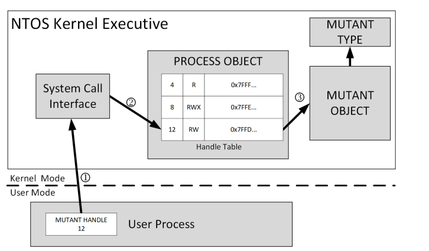
如果请求的访问权限与句柄表条目中记录的授予的访问权限不匹配，API将返回STATUS_ACCESS_DENIED，转换操作将失败。同样，如果对象类型不匹配，API将返回STATUS_OBJECT_TYPE_MISMATCH。这些步骤有助于确保只有经过授权的用户能够执行特定操作并访问特定类型的对象。 这两项检验对于系统的安全来说是非常好的： 权限检测防止用户越权访问 类型检测防止用户提交提交类型不相干的内核对象造成内核的类型混淆，从而造成安全危机。
Access Masks
句柄表里一个句柄对应的权限，被存储在32比特长的结构里，这个结构叫做AcessMasks，它也是系统调用参数里的DesiredAccess参数的结构。
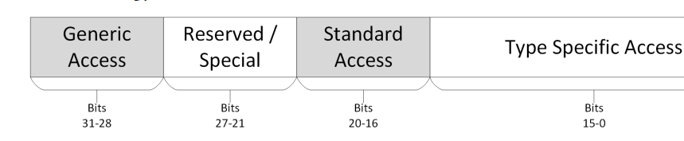
0-15bits的Type Specific Access（类型特定的访问权限）是Access Mask最重要的部分，用于给特定内核对象的授予专属的权限： 比如一个File对象会有专属的ReadData或者WriteData权限。
Standard Access（标准访问权限）也被用于授予权限，不过它授予的权限都是通用权限，标准访问权限用于定义谁可以执行这些通用操作，任何对象都可以授予这些权限：
Delete 删除
ReadControl 可以读取该对象的安全描述符
WriteDac 可将安全描述符的自主访问控制（DAC）写入对象
.....
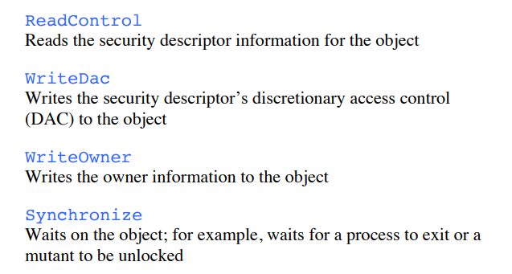
总的来说，标准访问权限定义了对象的基本访问规则，而类型特定的访问权限则允许更细粒度的、对象特定的操作。
随后便是27-21bits的Reversed/Special Access.大多数情况下都是Reversed（保留），但也可能是如下两个Special Access
AccessSystemSecurity
读写对象的审计信息（第八章详细讨论）
MaximumAllowed
在执行访问权限检查时请求对象的最大访问权限。（第九章详细讨论）
随后便是28-31bits的generic access。它允许应用程序使用系统调用的 DesiredAccess 参数请求对内核对象的访问权限。通用访问分为四个广泛的类别，包括 GenericRead（通用读取）、GenericWrite（通用写入）、GenericExecute（通用执行）和GenericAll（通用全部）。 具体点就是，当请求generic access中任意一个权限时，SRM会自动把这些权限转换为对应的类型限定的权限。 generic access与 Type-specific access的对应关系，存储在generic mapping table里
我们可以通过如下命令来查看File对象的generic mapping table

在上图中可以看见每个权限都对应着一个数字（numeric access mask），有时我们查看权限可能只看得到这个数字，我们可以通过如下命令来讲数字转成对应权限名，或者对应权限名转换成对应数字
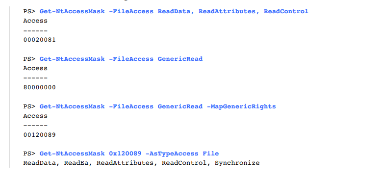
在powershell里，为了易用性，windows SKD将权限的名字改了一下，我们可以通过如下命令来查看
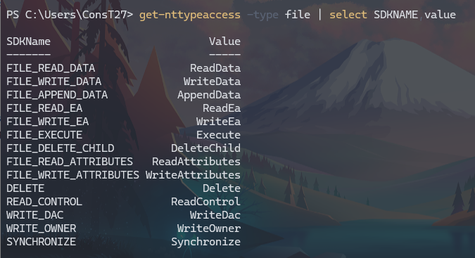
HANDLE Duplication
我们可以用NtDuplicateObject这个系统调用来复制句柄。 我们这样做有一个目的就是防止内核对象被销毁——一个内核对象只有当所有句柄都关闭后才会被销毁。 还可以用于句柄在不同的进程间传输（在源进程和目标进程都有DupHandle的权限的前提下） 同时复制新句柄时可以减少新句柄的权限，从而来实现安全性。
同时，一个句柄有两个特别的属性：Inherit（继承）和ProtectFromClose： Inherit属性可以让一个新进程在被创建时继承继承该句柄。句柄继承是一种允许子进程继承父进程的句柄的机制，从而使得子进程可以继续使用父进程的资源，如文件句柄、套接字等，以执行相关任务。 ProtectFromClose则是防止句柄被关闭，任何企图关闭此句柄的操作都会失败并返回STATUS_HANDLE_NOT_CLOSEABLE 状态码。
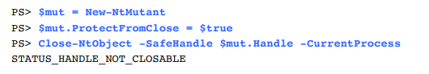